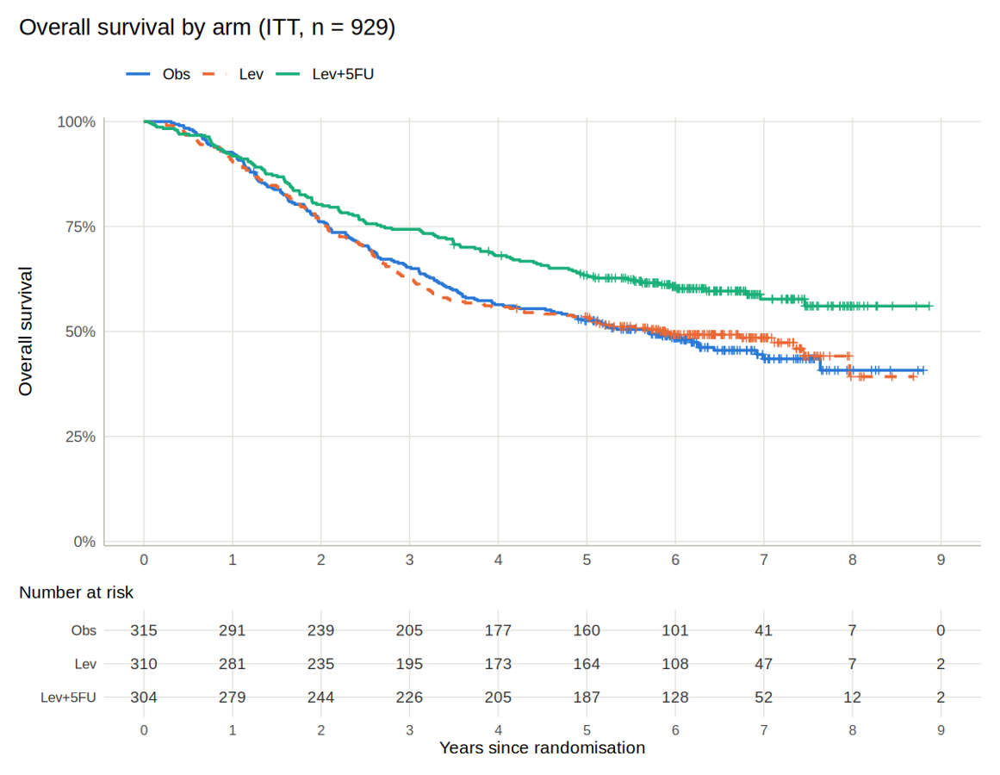

Clinical trial survival analysis
Chemotherapy cut the risk of death by 31% (HR 0.69, 95% CI 0.55–0.87).
Reanalysis of a 929-patient randomised colon cancer trial, driven by a pre-written statistical analysis plan: Kaplan–Meier, Cox models, proportional-hazards checks and restricted mean survival time.
View code →